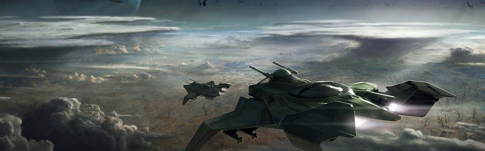

SYSTEM: VIRGIL

Excurs - System: Virgil
Das Virgil System wurde im Jahre 2412 durch Zufall entdeckt. Der berühmte Astrofotograf Alaine Viktus führte eine Deep Field Untersuchung etwa eine astronomische Einheit hinter der Kometenwolke des Vega Systems durch. Viktus hatte die Triebwerke seines Untersuchungsraumschiffs ausgeschaltet und war „dunkel geworden“, um seinen Scannern die maximale Auflösung zu ermöglichen. Als er versuchte, seine hochspezialisierte Sternenkamera zu aktivieren, war diese aufgrund einer nicht wahrnehmbaren Schiffsbewegung nicht in der Lage, einen Sternen-Lock durchzuführen. Weitere Nachforschungen ergaben, dass diese Bewegung aus der extremen Nähe – innerhalb von 400 Metern – zu einem nicht erfassten Sprungpunkt führte.
Allgemeine Verblüffung über Viktus unglaubliches Glück verwandelte sich schnell in beispiellose Passion für ausgedehnte Weltallentdeckung. Der Hauptreihenstern vom Typ-K, von Pressesprechern auf der Erde schnell als Virgil benannt, um einen Sinn von hoheitsvoller Schicksalsträchtigkeit zu etablieren, befand sich in einer Region des Alls, die naturgemäß als unerreichbar galt. Sein erster Planet war sogar der allerbeste Kandidat für Terraforming, der bis heute entdeckt wurde. Innerhalb von zehn Jahren war Virgil eine grüne, blühende Menschenkolonie und innerhalb eines Jahrhunderts eine todsichere Wahl für formale UPE-Repräsentation. Die schnelle Kolonisierung von Virgil führte zu „Project: Far Star“, dem von der Regierung finanzierten Marsch „nach draußen“, in einen Bereich des Alls, der durch Virgils Entdeckung freigeschaltet worden war.
Dann, so schnell sie begonnen hatte, kehrte sich die Situation wieder. Die Entdeckung der Vanduul im Jahre 2681 und der Ansturm ihrer zunehmend zerstörerischen Überfälle brachte Far Star und die galaktische Expansion nach Westen zu einem sofortigen Stillstand. Die Menschheit war geschockt von dem kompletten Fall und der nachfolgenden Aufgabe durch das UEE von Orion. Virgil verwandelte sich über Nacht in einen militärischen Außenposten mit ganzen Flotten, die nun von der ehemals so ruhigen Kolonie aus operierten. Einen einzigen Sprung von Tiber entfernt, dort wo das Empire die Front halten wollte, wurden Virgils Felder zur Unterstützung des massiven, militärischen Aufkommens angepasst.
Als Tiber fiel, kollabierte die Navy in vollem Rückzug und war nicht in der Lage, eine sekundäre Front zu etablieren, während die Vanduul unbarmherzig vorrückten. Die Vanduul zeigten keinerlei Gnade mit dem System, schlachteten militärisches Personal und Zivilisten vollständig ab. Virgil I idyllische Biosphäre wurde zu permanenten Wolken aus Asche und etwa 200 Jahre menschlicher Expansion wurden aus der Geschichte gelöscht. Einige Transporte entkamen dem Blutbad, geschützt von Abfangjägern des berühmten Squadron 214. Auch wenn sie die Chance hatten, dem System zusammen mit den Transporten zu entkommen, entschied sich jedes einzelne Mitglied des Squadrons dazu, nach Virgil I zurückzukehren, um zu versuchen, noch weitere Zivilisten zu retten.
In den folgenden Jahren besuchten eine Reihe von Aufklärungsmissionen Virgil, bis ein Netzwerk von Überwachungsbojen vom Empire im Jahre 2790 verdeckt etabliert worden war, um eine Vorwarnung zu erhalten, wenn Vanduul-Klans das System betreten.

„Wir werden nicht vergessen.“ – Tam Thackston (Befehlshaber, UEEN), Squadron 214, Bravo-Flugführer
Allgemeine Verblüffung über Viktus unglaubliches Glück verwandelte sich schnell in beispiellose Passion für ausgedehnte Weltallentdeckung. Der Hauptreihenstern vom Typ-K, von Pressesprechern auf der Erde schnell als Virgil benannt, um einen Sinn von hoheitsvoller Schicksalsträchtigkeit zu etablieren, befand sich in einer Region des Alls, die naturgemäß als unerreichbar galt. Sein erster Planet war sogar der allerbeste Kandidat für Terraforming, der bis heute entdeckt wurde. Innerhalb von zehn Jahren war Virgil eine grüne, blühende Menschenkolonie und innerhalb eines Jahrhunderts eine todsichere Wahl für formale UPE-Repräsentation. Die schnelle Kolonisierung von Virgil führte zu „Project: Far Star“, dem von der Regierung finanzierten Marsch „nach draußen“, in einen Bereich des Alls, der durch Virgils Entdeckung freigeschaltet worden war.
Dann, so schnell sie begonnen hatte, kehrte sich die Situation wieder. Die Entdeckung der Vanduul im Jahre 2681 und der Ansturm ihrer zunehmend zerstörerischen Überfälle brachte Far Star und die galaktische Expansion nach Westen zu einem sofortigen Stillstand. Die Menschheit war geschockt von dem kompletten Fall und der nachfolgenden Aufgabe durch das UEE von Orion. Virgil verwandelte sich über Nacht in einen militärischen Außenposten mit ganzen Flotten, die nun von der ehemals so ruhigen Kolonie aus operierten. Einen einzigen Sprung von Tiber entfernt, dort wo das Empire die Front halten wollte, wurden Virgils Felder zur Unterstützung des massiven, militärischen Aufkommens angepasst.
Als Tiber fiel, kollabierte die Navy in vollem Rückzug und war nicht in der Lage, eine sekundäre Front zu etablieren, während die Vanduul unbarmherzig vorrückten. Die Vanduul zeigten keinerlei Gnade mit dem System, schlachteten militärisches Personal und Zivilisten vollständig ab. Virgil I idyllische Biosphäre wurde zu permanenten Wolken aus Asche und etwa 200 Jahre menschlicher Expansion wurden aus der Geschichte gelöscht. Einige Transporte entkamen dem Blutbad, geschützt von Abfangjägern des berühmten Squadron 214. Auch wenn sie die Chance hatten, dem System zusammen mit den Transporten zu entkommen, entschied sich jedes einzelne Mitglied des Squadrons dazu, nach Virgil I zurückzukehren, um zu versuchen, noch weitere Zivilisten zu retten.
In den folgenden Jahren besuchten eine Reihe von Aufklärungsmissionen Virgil, bis ein Netzwerk von Überwachungsbojen vom Empire im Jahre 2790 verdeckt etabliert worden war, um eine Vorwarnung zu erhalten, wenn Vanduul-Klans das System betreten.
Virgil I
Es gibt ein berühmtes Foto, welches auf Virgil I aufgenommen wurde. Es zeigt die verkohlten Überreste eines imperialen Zollhauses, zertrümmerte weiße Säulen, die einen rauchenden, kohlschwarzen Himmel umrahmen. Ein zerbrochenes Schild liegt auf der rechten Seite des Bildes, seine originale Beschriftung „EXPORTE“ wurde mit dem Wort TOD unterschrieben. Dieses Bild, zusammen mit einer Reihe von Interpretationen verschiedener Künstler, tauchte auf UEERekrutierungspostern auf, welches die Vanduul-Bedrohung für über ein Jahrzehnt anprangerte. Jahre zuvor, war der erste Planet des Virgil Systems das Aushängeschild des UPE für Terraforming. Wenn es jemals eine Welt gab, die genau dafür gemacht schien, einen einfachen Übergang zur Bewohnbarkeit durch Menschen zu ermöglichen, dann war es Virgil. Man fand heraus, dass der Boden des Planeten Supernährstoffe enthielt, die es von Menschen importierter Vegetation erlauben sollte, sich schnell zu entwickeln. In wenigen Jahren hatte sich die Atmosphäre des Planeten auf Erdstandard eingestellt. Zunächst mit weiten Teilen von üppigem, tropischen Wald und scheinbar endlosen Ebenen bedeckt, wurde Virgil schnell zu einer hochproduktiven AG-Welt und zu einem exotischen Touristenziel. Mit dem militärischen Aufbau änderte sich die Grundhaltung der Gesellschaft auf Virgil I, aber die natürliche Schönheit blieb. Antimaterievorräte und RaumschiffReparatur-Einrichtungen standen ganz natürlich neben den massiven Bäumen, welche hauptsächlich die tropischen und warmen Regionen umrandeten. Weil sie scheinbar das Ziel als Belohnung für ihren hart erkämpften Sieg im Tiber System ansahen, plünderten die Vanduul Virgil I mit einer zuvor noch nie gesehenen Grausamkeit. Trotz der fehlenden Befestigungen (einige der Einheiten des Empire hatten sich eingegraben, in der Annahme, dass die Flotte in Tiber den Feind auf Abstand halten würde), pulverisierten die Vanduul den Planeten mit katastrophalen Bombenangriffen, die mehr als Zurschaustellung ihrer Grausamkeit wirkten als zur Erfüllung bestimmter, strategischer Ziele. Hunderttausende Menschen starben bei der Attacke, entweder durch die Bombenangriffe oder weil sie von Harvestern zerrissen wurden, die auf den noch bevölkerten Planeten abgefeuert wurden. Heute wird Virgil selten besucht. Die Atmosphäre ist giftig und genug Asche wurde von den Bombenangriffen aufgewirbelt, um die Welt in den Zustand eines permanenten nuklearen Winters zu versetzen. Veröffentlichte Berichte von UEE-Spionage-Expeditionen beschreiben den Status des Planeten wie folgt: ein abgeerntetes Ödland mit immer wieder eingestreuten Skeletten titanischer Bäume, die einst Ehrfurcht und Bewunderung hervorriefen. Diejenigen, die einen Blick auf diese einzigartige Höllenlandschaft werfen konnten, sind gezwungen, sich zu fragen, ob die Vanduul diese Erinnerungen an die Vergangenheit des Planeten mit Absicht dort ließen.Virgil II & III
Das Virgil System enthält zwei andere Welten und ein Asteroidenfeld, von denen keines signifikant ausgeschlachtet wurde. Virgil II ist ein unbewohnter Smogplanet mit wenigen lohnenswerten, natürlichen Ressourcen. Wie Virgil I heute, ist die Oberfläche von Virgil II von einer natürlichen Smogschicht blockiert. Militärische Berichte haben bemerkt, dass die Vanduul Virgil II ein großes Interesse entgegenbringen. Der Grund dafür ist jedoch unbekannt. Ein durchschnittlich dichtes Asteroidenfeld trennt den zweiten und dritten Planeten. Ablagerungen von Eisen und Titan wurden identifiziert, aber nie in Mengen, um Bergbauoperationen während der menschlichen Bewohnung zu etablieren. Der letzte Planet des Systems, Virgil III, ist ein Eisgigant. Großteilig unauffällig ist Virgil III – ein aufgewühlter Ball aus Wasser, Ammoniak und Methan. Er wäre als Quelle genutzt worden, wenn das System weiter entwickelt worden wäre.
Reisewarnung
Das Virgil-System wurde durch das UEE als ein Vanduul-System eingestuft. Reisen in dieses System sind daher ernsthaft riskant.Ein Flüstern im Wind
„Während der Rest der Planeten verrückt ist nach diesen Banu oder wie sie sich nennen, fühle ich mich sicherer hier mit meiner eigenen Art, weit weg von all den Alienfaxen, die so ablaufen.“ – Gouverneur Jack Koch, diente als Gouverneur unter Meyer von 2440 bis 2446„Wir werden nicht vergessen.“ – Tam Thackston (Befehlshaber, UEEN), Squadron 214, Bravo-Flugführer